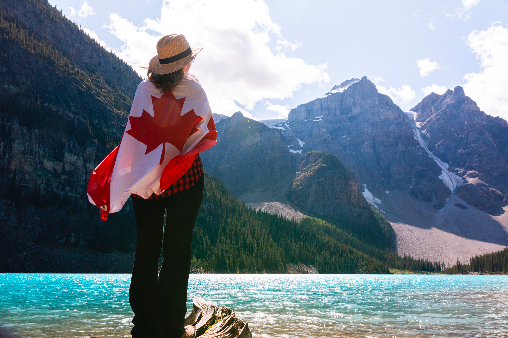

Banff National Park is famous for its vibrant lakes, majestic mountains and easy access to outdoor
adventures of all kinds.
There is also something magical about the night sky in Banff National Park. Enchanting silence.
Some of the most popular Banff National Park attractions include the Banff Gondola, Mount Norquay
Chairlift, Sunshine Gondola, Lake Louise Gondola & Chairlift. Don't miss your chance to visit the
Columbia Icefield and skywalk!

Mystical journey begins
Banff National Park is famous for its vibrant lakes, majestic mountains and easy access to outdoor adventures of all kinds.
The park spans 6,641 square kilometres (2,564 square miles) of striking mountainous terrain in the vast wilderness of the Canadian Rockies. Canada’s first national park and the world’s third, it has a rich heritage as one of the world’s most awe-inspiring mountain destinations. The bustling Banff townsite and village of Lake Louise are uniquely located in the national park. In this one of a kind place, there’s something for everyone to discover. Whether you come for the spectacular valleys and rugged peaks, the authentic Canadian eats, the vibrant arts and culture scene, or a little bit of everything, there is no shortage of unforgettable ways to immerse yourself in Banff National Park.
Type
Period
Duration
Accommodation
Active leisure
January-February
5 days/4 nights
Hotel/Camping
BANFF
Day1. Pick up in Calgary, cycle the Legacy Trail.
Early morning pick-ups in Calgary. After a short welcome meeting, loosen up with your first bike ride. The Legacy Trail offers some of the most breathtaking panoramas in all of Banff National Park. Fuel up with a trailside picnic before taking a scenic walk to Marble Canyon’s impressive waterfall. Dinner tonight will be served at the Baker Creek Bistro. Relax for the rest of the night at the Baker Creek Chalet, your home for the next three nights. Baker Creek Chalets, Baker Creek (Lunch, dinner) Legacy Trail Biking Distance: 21 kilometres (13 miles), paved trailMarble Canyon Hiking Distance: 1.4 kilometres (0.8 miles).
On the first day of the trip we can either pick you up from the Wyndham Garden Calgary Airport at 8am or at the Sheraton Suites Calgary Eau Claire at 8:20am., Wyndham Garden Calgary Airport, 11 Freeport Cres NE, Calgary, Alberta T3J 0T4, Canada
Day2. Banff National Park - Yoho National Park
After pickup from Calgary we will head to Lake Louise. Then we will continue to Moraine Lake, see Ten Peaks Valley, Spiral Tunnel. We will also visit Emerald Lake and Natural Bridge.
Day3. Banff National Park - Jasper National Park - Jasper
Then we will pass Icefield Parkway, visit attractions Bow Lake, Columbia Icefield, Glacier Skywalk, Ice Explorer, Athabasca Falls and Crowfoot Glacier. Overnight in Jasper.
Bow Lake
Columbia Icefield
Jasper Park
Glacier Skywalk
Athabasca Falls
Crowfoot Glacier
Day4. Jasper - Banff - Calgary
Maligne Canyon
Maligne Canyon is a natural feature located in the Jasper National Park near Jasper, Alberta, Canada. Eroded out of the Palliser Formation, the canyon measures over 50 metres (160 ft) deep.
This amazing lake and the scenery surrounding it is one of the most-photographed areas in the world. It is beloved for its crystalline waters, the surrounding mountains, and Spirit Island. The area is home to many animals, including caribou.
Peyto Lake in Alberta, Canada's Banff National Park is known for its stunning aqua-blue coloration. It can be best seen from a viewing point just off the Icefield Parkway; this is considered one of the best views in Canada.
Airport Pickup: Free pickup from 10:00AM - 10:00PM every 2 hours (10:00/12:00/14:00/16:00/18:00/20:00/22:00).
Please advise your pickup time in advance and meet the guide in yellow coat at Exit #7 Information Centre.
Guests can also choose to take Shuttle Bus to hotel. Paid airport pickup: 1-4 passengers, C$60 each car; 5-10 passengers, C$150 each car (exclude tax, tips of C$5/person).
If you do not need the pick-up service, please inform us one week before departure. If you do not provide the flight one week before departure, you will not need the pick-up service and shall go to the hotel by yourselves (we will provide a VOUCHER).
Airport Drop off: Please arrange your return flight after 9:30pm.
We Are Here For You
Banff Questions?
Got a question about travel and vacation in Banff? Have a trip report that you want to share? Got a review on a really cool lodge or restaurant? This is the place to submit it. We will respond within 24 hours.
Magic Trip is a full-service travel agency. We’ll will make your next vacation easy for you. We are a Platinum Level Authorized Vacation Planner, but our experts can find the right vacation experience for you no matter the destination. Where do you want to go?


.jpg)